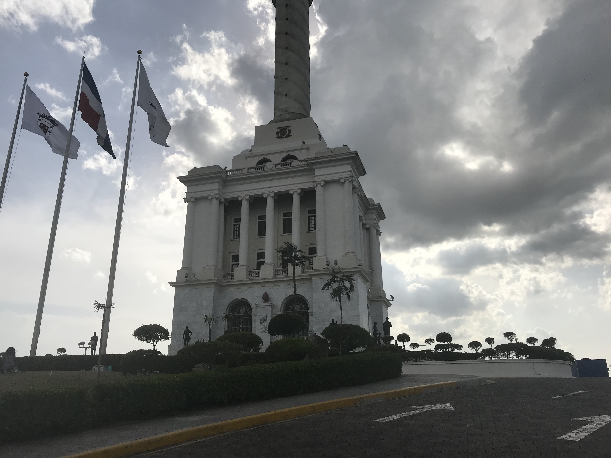
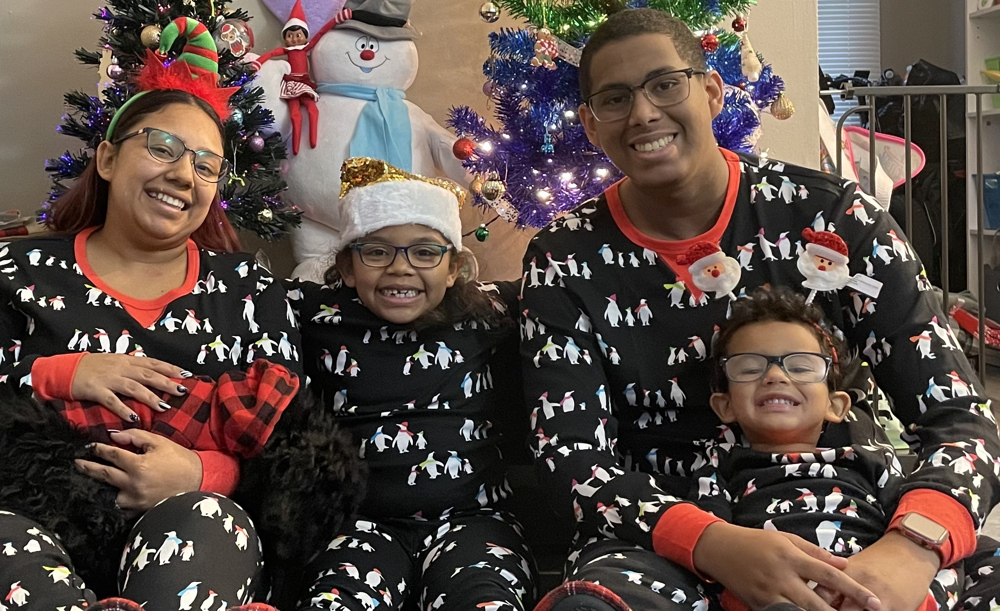
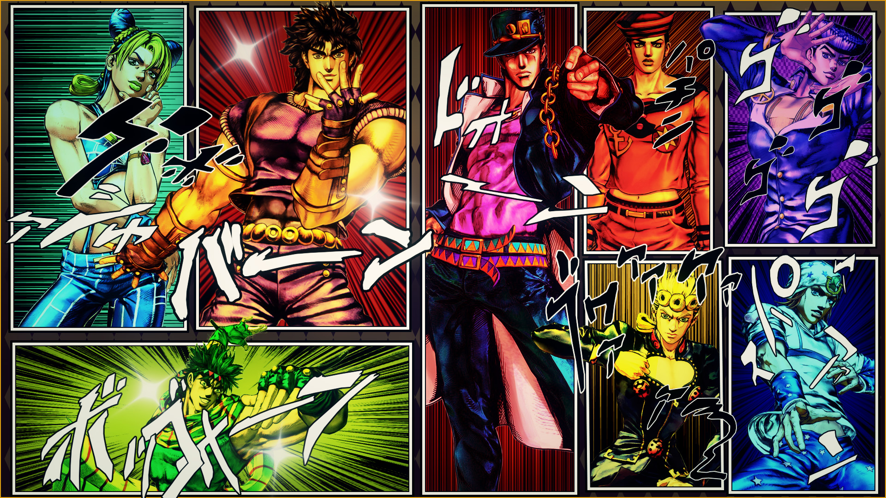

About Me
Hey, I'm Jonathan (or Jon)
I'm currently a postdoctoral research associate at UConn, where I also pursued my Physics Ph.D., working under Daniel Anglés-Alcázar. My research involves studying the impact of AGN feedback and fueling on galaxy evolution by using the Feedback In Realistic Environments (FIRE) simulations. I share a few things about myself here, feel free to get to know me better!
First Generation Hispanic
 I am a first generation Hispanic-American, born in the city that never sleeps New York City, NY. My parents are from the Dominican Republic, and I am the oldest of two. I am the first in my family to earn a Bachelor's, Master's, and Ph.D. degree in Physics with a focus in computational astrophysics. I am also the first in my family to go to graduate school and pursue a Ph.D. in any field. I am very proud of my heritage and my family, and I hope to be a role model for my kids and extended family. I hope to inspire them to pursue their dreams and to never give up on themselves.
Family
 I am father of three wonderful kids that I share with my amazing partner. They are the constant reminder of why I do what I do and continue to move forward, they are my motivation and inspiration to do better. I also have an energetic dog named Noir, who is a 2 year old Cockapoo, and he loves to love.
Favorites
 I like a variety of things, but I'll list a few of my favorites here. I love to play video games whenever I can, I'm currently playing The Legend of Zelda: Tears of the Kingdom. I love to watch movies and shows no matter the language, my favorite shows and series are Doctor Who, Kamen Rider, Super Sentai and Law & Order Special Victims Unit. I'm an avid anime watcher, my favorite anime is JoJo's Bizarre Adventure, a show that I forever want everyone to experience. I took Japanese during my time as an undergraduate, which I continue to learn to this day.